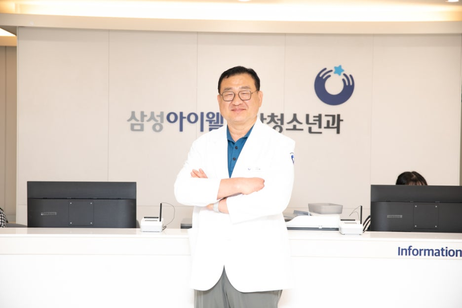
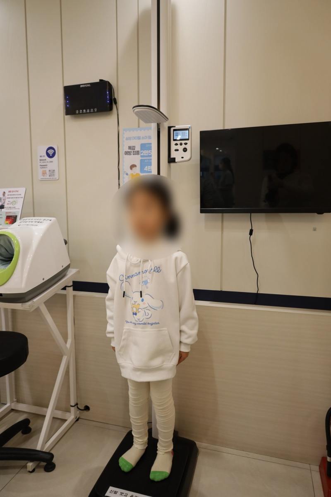
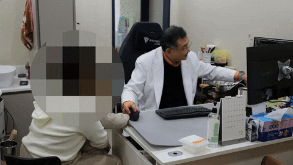
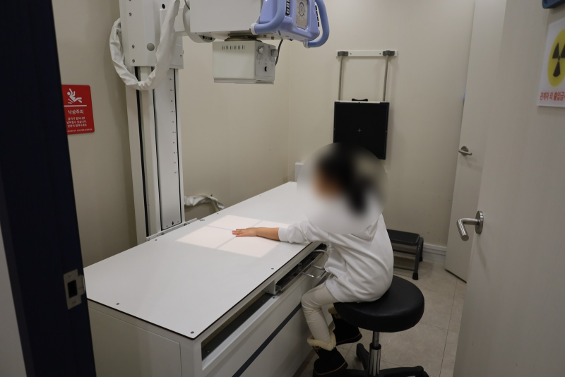
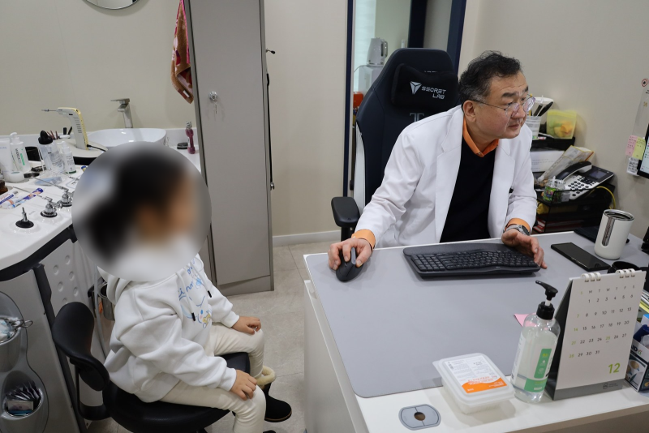
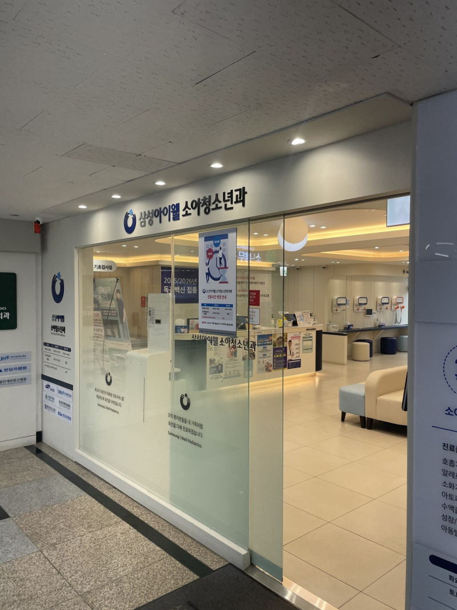

안녕하세요.
아이의 성장을 세심하게 돌보는
삼성아이웰소아과 고시환입니다.

새 학기 반 단체사진을 받아 든 저녁,
아이가 또 맨 앞줄 가운데에
서 있습니다.
작년에도, 재작년에도
같은 자리였죠.
사진을 넘기다 말고
옆 친구와 키를 슬쩍
견주어 보게 됩니다.
아빠도
늦게 컸다니까
괜찮겠지.

용인성장검사
이렇게 마음을 다독여 보지만
쉽게 내려놓아지지는 않습니다.
지금 뭔가 놓쳐서 나중에
손쓸 수 없게 되면 어쩌나,
괜히 병원에 데려갔다가
아이가 '나 작은가 봐'
하고 위축되면 어쩌나.
이 두 걱정 사이에서
몇 달씩 망설이시는
부모님을 자주 뵙니다.
3분만 집중해 주시면,
지금 병원에 가야 하는지
조금 더 지켜봐도 되는지
스스로 가늠하실 기준이 생길 겁니다.
<목차>
1. 반에서 작은 편인데,
꼭 확인해야 하나요?
2. 용인성장검사,
실제로 무엇을 보나요?
3. 숫자 너머의 아이를
함께 보는 이유
1. 반에서 작은 편인데, 꼭 확인해야 하나요?
줄 서면
늘 앞쪽이에요.
진료실에서 가장 많이 듣는 말인데,
사실 앞줄에 선다는 것만으로
문제가 있다고 보지는 않습니다.

용인성장검사
의학적으로 눈여겨보는 건 두 가지입니다.
같은 나이·성별 아이 100명 중
작은 쪽 3명 안에 드는지
(3백분위 미만),
그리고 1년에 자라는 키가
4cm에 못 미치는지입니다.
사춘기 전 아이들은 보통
1년에 4~7cm쯤 자라거든요.
여기서 더 무게를 두는 쪽은 두 번째입니다.
지금 조금 작아도 해마다
꾸준히 자라고 있다면
크게 걱정하지 않아도
되는 경우가 많습니다.
반대로 키는 평균인데 작년보다
자란 폭이 눈에 띄게 줄었다면
오히려 살펴봐야 하죠.
결국 사진 한 장이 아니라
지난 1~2년의 흐름이
답을 쥐고 있습니다.
2. 용인성장검사, 실제로 무엇을 보나요?
그렇다면 그 흐름은
어떻게 확인할까요.
먼저 키와 몸무게를 재고,
영유아검진이나 학교 신체검사
기록이 있다면 함께 봅니다.
예전 수치가 있으면
아이가 어떤 곡선을 그려왔는지
훨씬 또렷하게 보이거든요.
다음은 손 X-ray로
확인하는 뼈나이입니다.

용인성장검사
같은 열 살이라도
뼈의 나이는
다를 수 있습니다.
같은 날 출발한 마라톤에서
누구는 이미 반환점을 돌았고,
누구는 아직 초반 구간을
달리고 있는 것과 비슷합니다.
지금 키가 같아도
남은 거리가 다르니,
앞으로 자랄 여유도 달라지죠.
필요하면 혈액으로 갑상선 호르몬,
IGF-1(성장호르몬 분비를
간접적으로 보여주는 지표),
빈혈이나 간·콩팥 기능처럼
키에 영향을 줄 수 있는
요인을 살핍니다.
자라는 속도가 뚜렷하게 느리다면
호르몬 자극 검사를 추가로 고려하고요.
다만 결과지의 숫자만으로
모든 답이 나오지는 않습니다.
3. 숫자 너머의 아이를 함께 보는 이유
저는 1995년부터 30년 동안
소아 내분비 진료를 해왔습니다.
그 시간 동안 배운 건,
같은 뼈나이·같은 호르몬
수치를 가진 아이도 생활에 따라
전혀 다른 길을 간다는 점입니다.
그래서 결과를 설명드리기 전에
아이에게 먼저 묻습니다.
보통 몇 시에 자는지,
아침은 먹고 나오는지,
쉬는 시간엔 뭘 하고 노는지.

용인성장검사
부모님께는 아이 성격이나 요즘
신경 쓰는 일이 있는지도 여쭙니다.
임상심리학을 공부하면서
스트레스와 수면이 자라는
몸에 얼마나 큰 영향을 주는지
더 깊이 보게 되었거든요.
호르몬 치료가 필요한
아이도 분명 있습니다.
하지만 상당수는
잠자는 시간, 식사, 운동 습관을
현실적으로 조정하는 데서 출발합니다.
이론적으로 완벽한 계획보다,
이 아이와 이 가정이 실제로
지킬 수 있는 계획이 더 오래 갑니다.
많이 들어야 정확하게
처방할 수 있다는 게
제 진료 원칙입니다.
항목
핵심
확인이
필요한 기준
같은 나이·성별
3백분위 미만,
또는 1년에 4cm 미만
사춘기 전
평균 속도
1년에 4~7cm
기본 평가
키·몸무게 측정,
과거 신체 기록 비교
뼈나이
손 X-ray로
남은 자랄 여유 확인
혈액 평가
갑상선 호르몬,
IGF-1,
빈혈·간·콩팥 기능
추가 평가
속도가
뚜렷하게 느리면
호르몬 자극
검사 고려
생활 점검
수면·식사·
운동·스트레스
결국 지금의 키보다 중요한 건,
아이가 자라는 속도와 그 속도를
만드는 일상입니다.
단체사진 맨 앞줄에 선
아이를 보며 망설이셨던 그 저녁,
이제는 막연한 걱정 대신
확인할 기준을 갖고 계십니다.
기록 몇 장과 한 번의 확인만으로도,
더 지켜봐도 되는지 지금 움직여야
하는지가 훨씬 분명해집니다.

용인성장검사
병원에 온다고 아이에게
'너는 작다'고 말하는 게 아닙니다.
지금 잘 크고 있는지 함께
들여다보는 시간일 뿐입니다.
성장은 기다림이 아니라 관리입니다.
삼성아이웰소아과가 함께하겠습니다.